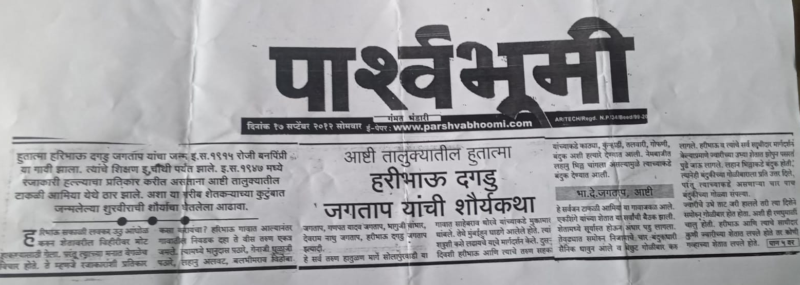

ग्रामपंचायत विषयी
बनपिंप्री (Banpimpri) हे गाव महाराष्ट्र राज्यातील अहिल्यानगर (अहमदनगर) जिल्ह्यातील श्रीगोंदा तालुक्यात आहे. खाली या गावाची महत्त्वाची माहिती दिली आहे.
पार्श्वभूमी : हरिभाऊ दगडू जगताप यांची शौर्यकथा

हुतात्मा हरिभाऊ दगडू जगताप यांचा जन्म इ.स. १९१५ रोजी बनपिंप्री या गावी झाला. त्यांचे शिक्षण इ.१० वी पर्यंत झाले. इ.स. १९४७ मध्ये रजाकारी हल्ल्याचा प्रतिकार करीत असताना आष्टी तालुक्यातील टाकळी आमिया येथे वीर झाले. अशा या गरीब शेतकऱ्याच्या कुटुंबात जन्मलेल्या शुरवीराची शौर्यकथा घेऊन आलेला आढावा.
हरीभाऊ सकाळी लवकर उठून आंघोळ करून शेतावरील विहिरीवर मोट हाकण्यासाठी गेले. परंतु त्यांच्या मनात वेगळेच विचार होते. ते म्हणजे रजाकारांशी प्रतिकार कसा करायचा? हरीभाऊ गावात आल्यानंतर गावातील निवडक १० ते २० तरुण एकत्र जमले. त्यामध्ये भानुदास पठारे, गेनाजी धुलगुडे पठारे, लहू अलवट, बलभीमराव विठोबा जगताप, गणपत यादव जगताप, भागुजी वांभार, देवराम नाथा जगताप, हरीभाऊ दगडू जगताप इत्यादी.
हे सर्व तरुण हातुळण मार्गे सोलापूरवाडी या गावात साहेबराव थोरवे यांच्याकडे मुक्कामास थांबले. तेथे मुंबईहून धाडे आलेले होते. त्यांनी शत्रूशी कसे लढायचे याचे मार्गदर्शन केले. दुसऱ्या दिवशी हरीभाऊ आणि त्यांचे तरुण सहकारी टाकळी आमिया या गावाजवळ आले. एकशिंगे यांच्या शेतात सर्वांची बैठक झाली. शेतामध्ये सूर्यास्त होऊन अंधार पडू लागला. तेवढ्यात समोरून निजामाचे चार बंदुकधारी सैनिक धावून आले व बेछूट गोळीबार करू लागले. यांच्याकडे काठ्या, कुऱ्हाडी, तलवारी, गोफणी, बंदुका अशी हत्यारे देण्यात आली. नेमबाजीत हरीभाऊ निष्णात असल्यामुळे त्यांच्याकडे बंदूक देण्यात आली होती. समोरून गोळीबार सुरू असताना त्यांनीही प्रत्युत्तर दिले. परंतु त्यांच्याकडे असलेल्या चार-पाच बंदुकीच्या गोळ्या संपल्या. हरीभाऊ आणि त्यांचे सहकारी ज्वारीच्या उभ्या पिकात झोपून पुढे सरकू लागले. तरीही समोरून गोळीबार सुरूच होता. अशा या रणधुमाळीत हरीभाऊ जगताप यांना वीरमरण आले.
प्रसिद्ध देवस्थान : काळभैरवनाथ मंदिर
अहिल्यानगर जिल्ह्यातील श्रीगोंदा तालुक्यातील बनपिंप्री येथील काळभैरवनाथ व जोगेश्वरी माता मंदिर हे एक अत्यंत जागृत आणि प्रसिद्ध देवस्थान मानले जाते. या मंदिराविषयीची महत्त्वाची माहिती खालीलप्रमाणे आहे:
१. मंदिराचे वैशिष्ट्य आणि बांधकाम स्थापत्यशैली: हे मंदिर अतिशय सुंदर असून त्याच्या बांधकामात राजस्थानी लाल दगडांचा वापर करण्यात आला आहे. मंदिरावर केलेले भव्य आणि नक्षीकाम पर्यटकांचे व भाविकांचे लक्ष वेधून घेते. स्वयंभू स्थान: हे काळभैरवनाथांचे एक महत्त्वाचे आणि श्रद्धेचे स्थान मानले जाते.
२. धार्मिक महत्त्व काळभैरवनाथ हे भगवान शिवाचे रुद्र रूप मानले जाते. बनपिंप्री येथील ग्रामस्थ आणि पंचक्रोशीतील भाविकांचे हे कुलदैवत आहे. असे मानले जाते की, या ठिकाणी मनापासून केलेली प्रार्थना पूर्ण होते, त्यामुळे दर शनिवारी आणि रविवारी येथे भाविकांची मोठी गर्दी असते.
३. यात्रा आणि उत्सव मुख्य यात्रा: दरवर्षी काळभैरव जयंती किंवा चैत्र महिन्यात येथे मोठी यात्रा भरते. या यात्रेमध्ये पालखी सोहळा, अभिषेक आणि विविध धार्मिक कार्यक्रमांचे आयोजन केले जाते. कुस्ती स्पर्धा: यात्रेनिमित्त येथे भव्य कुस्तीचा आखाडा (हगामा) भरवला जातो, ज्यामध्ये राज्यभरातून पैलवान सहभागी होतात.
४. पर्यटनासाठी सोयी बनपिंप्री हे गाव निसर्गरम्य परिसरात असल्याने अनेकजण येथे Pre-wedding Photoshoot साठी देखील येतात. मंदिराची भव्यता आणि लाल दगडांमधील कोरीवकाम फोटोग्राफीसाठी उत्तम पार्श्वभूमी ठरते.